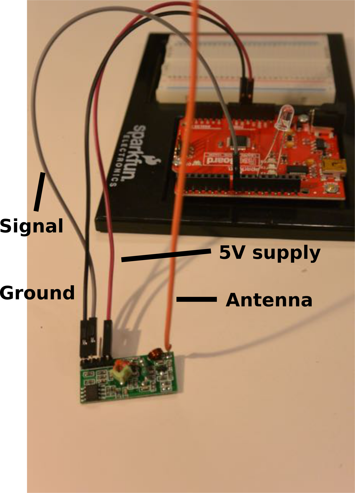
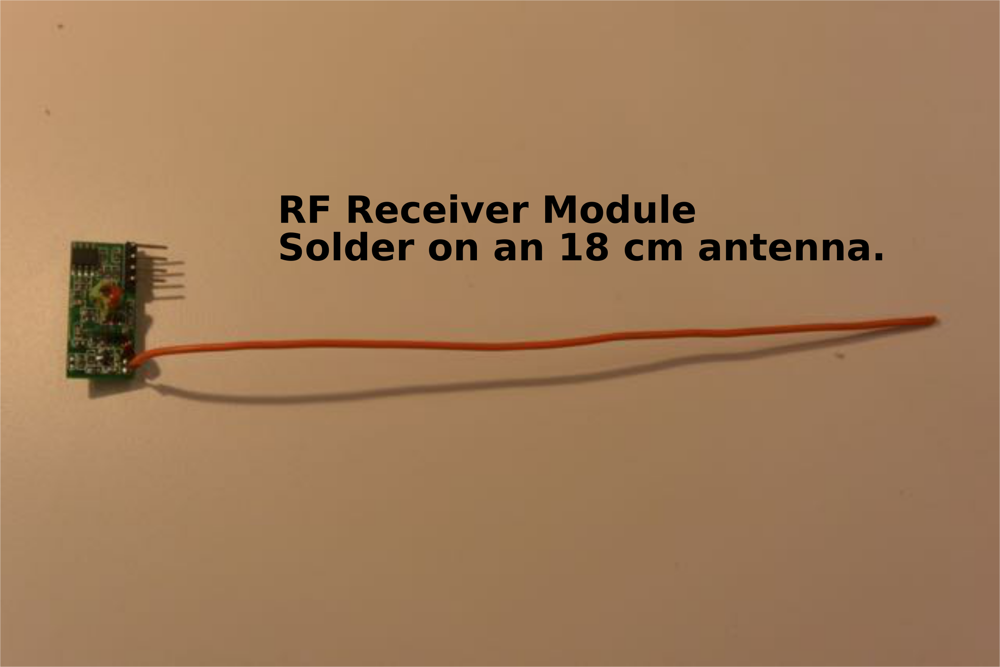
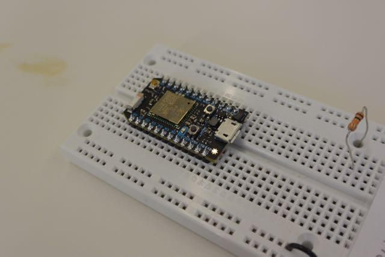

Communication
Communication using infrared emitter and detector

Board layout for infrared emitter. Signal lead is attached to 5V to run the LED continuosly, or to
a digital pin (12 in this picture).
Here is an Arduino sketch to pulse the IR LED.

Board layout for infrared detector (aka receiver). Signal lead is attached to A0.
First set up transmit and receive boards with LED continuously on. Find the signal, and use it to detect objects
interrupting the beam. Here is an Arduino sketch to read the signal.
Next, see how far you can communicate. It may help to pulse the transmitted signal.
Communication using Radio modules (433 MHz)
These little modules are a good choice for short (~50 feet?) distances, unidirectional communication, and low data rates. Very simple to use.

 <
<
Board layout for the Radio Frequency (RF) transmit module.
Here is an Arduino sketch to pulse the transmitted RF signal. Signal lead
goes to Pin10 on the Arduino.
<
Setup for the RF receiver module. Signal wire (gray) goes to PIN 8. There is an LED between PIN11 and GND.
Solder antennas to both modules. Set the two boards up close together. Once the transmit board is programmed, the LED on the receive board should flash twice per
second if radio connection is successful. See how far apart you can transmit. Here is an Arduino sketch to read the signal.
The sketches for sending and receiving only communicate "on" and "off". It is possible to send more data, for example,
by connecting the modules to the RX and TX pins of the respective Arduinos and using them as a "serial bridge".
Communication using nRF24l01 radios
These modules can be used for longer distances (~100 m, up to 1 km depenging on antenna) and are good for higher data rates and two-way communication.
They are more complicated to use, but there are Arduino libraries for operating them.
Pictures and examples will follow here.
Communication using Bluetooth modules
Several modules available, for communicating with bluetooth devices such as computers, phones, and other bluetooth modules. These can be
pretty straightforward to use.
Pictures and examples will follow here.
Communication using Wireless internet modules:
ESP8266 (Adafruit Huzzah) and the Photon.
Pictured below, the Adafruit Huzzah board, which incorporates the ESP8266 wifi chip. The board has a microprocessor
with input and output pins, capable of analog read, together with a wireless internet module. It can be programmed from
the Arduino environment. Many programming examples are available. It connects with the Harvard wireless if the MAC address
is registed with HUIT.
Pictured below, The "Photon" from Particle.io. The board also has a microprocessor
with input and output pins, capable of analog read, together with a wireless internet module. It is programmed
and operated from "the cloud". It is reasonably easy to use. It connects with the Harvard wireless if the MAC address
is registed with HUIT - see instructions below for doing this.
